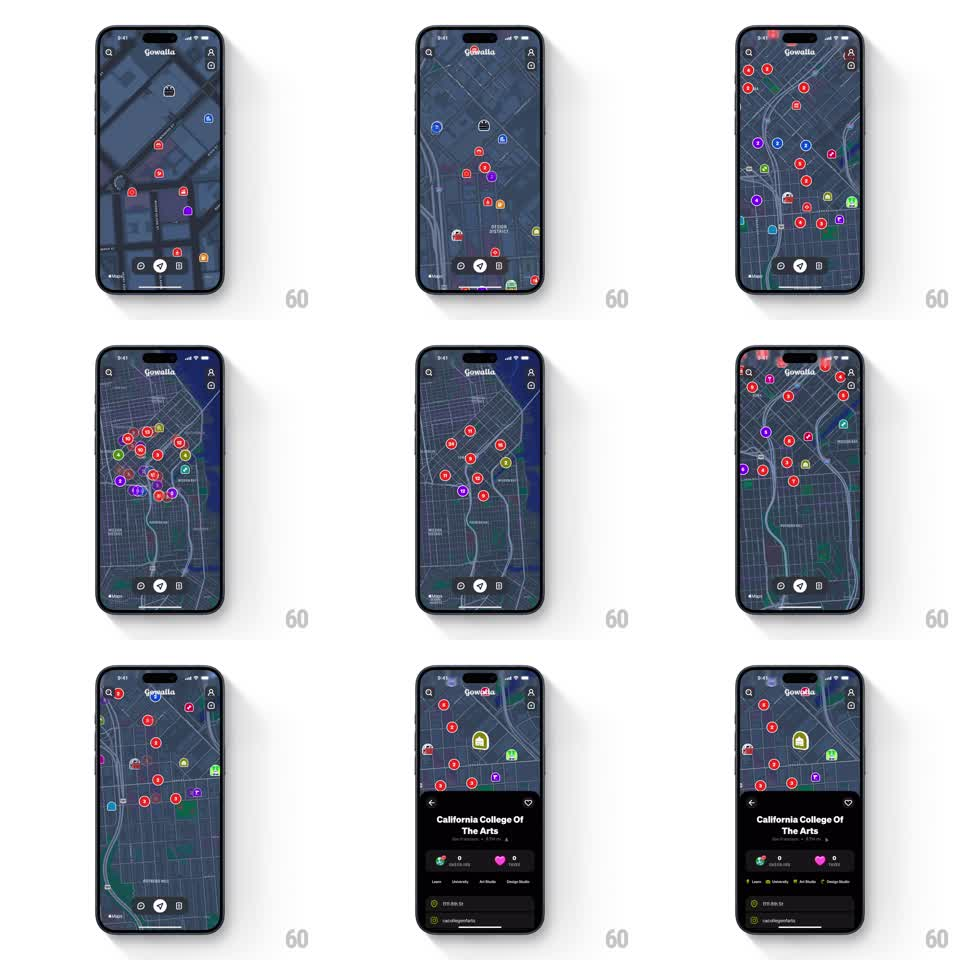

Media
Frame-by-frame

Rebuild this interaction 1:1: Gowalla's map detail sheet - on a dark map dense with colorful pins, tapping a pin springs a black bottom sheet up with the place's name and actions, and scrolling it expands the sheet further over the map.

Rebuild this interaction 1:1: Gowalla's map detail sheet - on a dark map dense with colorful pins, tapping a pin springs a black bottom sheet up with the place's name and actions, and scrolling it expands the sheet further over the map.
## Integration
Integration: stack-agnostic spec - springs given as stiffness/damping, timed motions as duration + curve; map every value to your framework and animation library of choice.
## Scene
Full-screen dark map (Gowalla header, search and account icons) scattered with round colored category pins - red, purple, green, blue, yellow - each with a tiny glyph. Tapping a pin brings up a black sheet: place name ("California College Of The Arts"), category sub-line, a row of reaction chips, and a category tag row. The sheet can grow from half height to near-full.
## Motion spec
Pattern: pin-tap spring sheet with scroll-to-expand.
- The tapped pin highlights (a bright outline ring, 150ms) and the map recenters slightly so the pin sits above the sheet's final peek height (~350ms, ease-out).
- The sheet slides up with a spring (stiffness ~300, damping ~28) to its half detent, rounded top corners, the map dimming a touch behind it.
- Scrolling the sheet's content expands it: drag up past the half detent and the sheet springs to near-full height; drag down reverses through the detents, each snap a soft spring settle.
- Pins keep a gentle idle pulse (scale 1.0 to 1.08, staggered per pin, 2s) so the map feels alive behind the sheet.
- Dismiss by dragging the sheet below its lowest detent or tapping the dimmed map; the sheet falls away and the pin ring fades.
## Calibration
- Two detents only (half, near-full) plus dismiss; more detents make the snap mushy.
- The map recenter happens with the sheet rise, not after - the pin and sheet should arrive together.
## Reduced motion
Sheet fades in at the half detent; expand/collapse are instant detent jumps.
## Don't miss
- Pin colors encode category and stay saturated against the dark map - do not flatten them to one accent.
- The sheet is opaque black; the map only shows around its rounded corners, not through it.